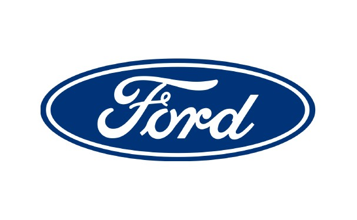

Work Experience
Ford Motor Company

From May of 2021 to June of 2023 I worked as a product designer for internal tools at Ford Motor Company. My research in this time revolved around conducting interviews, usability tests, focus groups and heuristic evaluations. The research then influenced design changes and mockups for over 20 new features of the application. These mockups were created in Sketch and then shared on an InVision board for collaboration. In addition to these duties I helped integrate design thinking into my team as the first hire into the role. As well, I was able to serve as interim product manager for my team, communicating with stakeholders and organizing sprints in Jira.
Real Estate Website Design

During the summer of 2020 I was able to perform an independent research and design project for a local realtor in the Birmingham, MI area. My research included interviews, analyzed competitors for residential real estate websites and held focus groups. I then designed and prototyped multiple iterations of a responsive web interface through Figma to help my client improve his online presence.
Michigan Medicine: Gifts of Art

In my senior year of undergrad I was given the opportunity to design an application for the Art Cart program at the University of Michigan Hospital intended to enhance patient-program interaction. My team and I are researched common objectives among potential users to ensure the functions of the application met the requirements of the targeted audience. After our research, we created wireframes and prototypes through Figma to prepare the application for user testing. We then conducted task-based user testing to influence the final design and turned over a detailed design report with annotations.
TSM Corporation

In both the summers of 2017 and 2019 I was able to gain internship experience at TSM Corporation, a Tier 1 automotive supplier. In the summer of 2019 I was able to focus specifically on my field as an IT intern. This allowed me to operated cohesively with the internal ERP (Enterprise Resource Planning) software and share company drive documents to enhance office system performance. With the constant change in requirements throughout the industry, I was given the opportunity to redesign labels for outgoing products to meet new manufacturer standards. Lastly, I was responsible for generating custom reports, using the SQL server within the existing ERP software, to improve managers’ ability to locate relevant statistics.